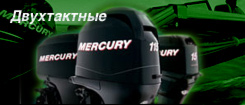
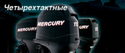
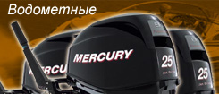
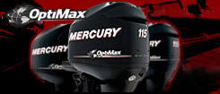

ДВУХТАКТНЫЕ
Максимальная скорость и быстрый разгон
|

ЧЕТЫРЕХТАКТНЫЕ
Минимальный уровень шума и выбросов. Экономичность
|

ВОДОМЕТНЫЕ
Моторы, обеспечивающие высокую проходимость
|

OPTIMAX
Лидер по показателям мощности, экономичности, надежности
|
 Стандартная комплектация подвесных лодочных моторов Mercury
Стандартная комплектация подвесных лодочных моторов Mercury Прайс-лист (цены) на лодочные моторы Mercury
Прайс-лист (цены) на лодочные моторы Mercury